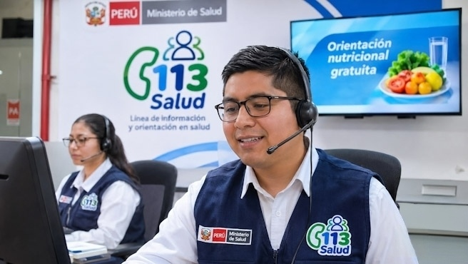
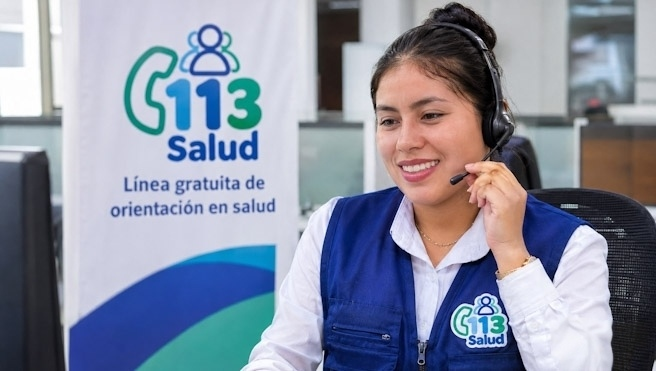

Cómo prevenir la obesidad con hábitos alimenticios saludables: recomendaciones del Minsa
El Minsa recomienda evitar dietas extremas, priorizar alimentos naturales, reducir ultraprocesados y mantener actividad física para prevenir la obesidad y enfermedades crónicas.

Fuente: Ministerio de Salud (Minsa).
La obesidad es una enfermedad crónica que afecta la salud mucho más allá del peso corporal. Está asociada a un mayor riesgo de diabetes tipo 2, hipertensión arterial, enfermedades cardiovasculares y otros problemas que pueden reducir la calidad de vida. Por eso, el Ministerio de Salud (Minsa) promueve la prevención a través de hábitos alimenticios saludables y orientación nutricional gratuita por la Línea 113 Salud.
Prevenir la obesidad no significa seguir dietas extremas ni dejar de comer, sino aprender a elegir mejor los alimentos, controlar las porciones y mantener una rutina activa. Los cambios pequeños y sostenidos en el tiempo son los que realmente generan resultados.
Evita las dietas milagrosas
Uno de los errores más comunes al intentar bajar de peso es recurrir a dietas restrictivas o "milagrosas" que prometen resultados rápidos. Estas estrategias suelen ser difíciles de mantener, pueden causar rebote y, en algunos casos, afectan la salud. Los especialistas del Minsa recomiendan adoptar un enfoque equilibrado: comer mejor, no comer menos de forma extrema.
Una alimentación saludable se basa en variedad, equilibrio y moderación. No se trata de prohibir todos los alimentos, sino de dar prioridad a los que nutren y limitar aquellos que aportan muchas calorías, azúcar, sal o grasas saturadas con poco valor nutricional.

Preparar comidas caseras con alimentos naturales facilita el control de porciones y la calidad de la dieta.
Hábitos alimenticios que ayudan a prevenir la obesidad
El Minsa recomienda incorporar hábitos simples que pueden aplicarse en el día a día:
- Prioriza comidas caseras: preparadas con alimentos naturales, con menos sal, azúcar y grasas añadidas.
- Consume frutas y verduras diariamente: aportan fibra, vitaminas y ayudan a dar saciedad.
- Bebe suficiente agua: reemplaza gaseosas y bebidas azucaradas por agua pura.
- Reduce ultraprocesados: limita snacks, bebidas azucaradas, embutidos y productos con exceso de sodio o grasas saturadas.
- Cuida las porciones: sirve cantidades moderadas y come con atención, sin distracciones.
- No te saltes comidas: mantener horarios regulares ayuda a evitar atracones.
La actividad física también cuenta
La alimentación equilibrada funciona mejor cuando se combina con movimiento. No es necesario hacer ejercicio intenso desde el primer día: caminar, subir escaleras, bailar o realizar actividad física moderada durante 30 minutos la mayoría de días de la semana puede marcar una diferencia. La clave es elegir una actividad que se pueda mantener según la edad y la condición de salud de cada persona.
Pequeños cambios en la rutina diaria, como caminar trayectos cortos, reducir el tiempo sentado o realizar pausas activas, también contribuyen a mejorar el bienestar y prevenir complicaciones asociadas al sobrepeso y la obesidad.

Combinar alimentación equilibrada con actividad física regular es clave para prevenir la obesidad.
Cuándo buscar orientación
Si tienes dificultades para controlar tu peso, tienes antecedentes familiares de diabetes o hipertensión, o quieres mejorar tu alimentación, buscar orientación profesional es un buen paso. El Minsa ofrece orientación nutricional gratuita a través de la Línea 113 Salud, opción 3, o por WhatsApp a los números 955 557 000 y 952 842 623.
Adoptar hábitos saludables es una inversión a largo plazo. Comer mejor, moverse más y evitar dietas extremas son decisiones que protegen la salud y ayudan a prevenir enfermedades crónicas.